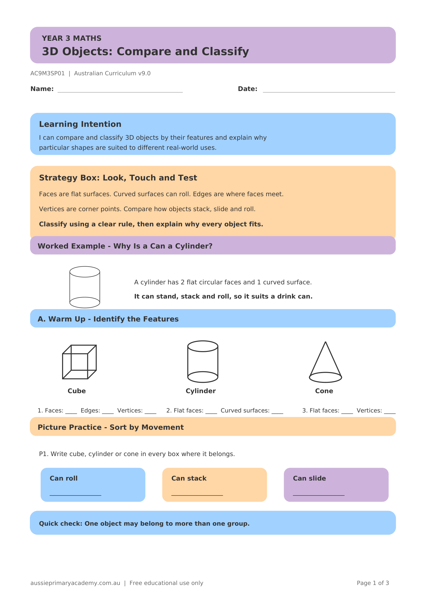

Year 3 · Maths · Geometry · Free Printable
3D Objects: Compare and Classify
Compare and classify 3D objects by their features and explain why particular shapes suit different real-world uses.
Worksheet Preview

Learning Intention
Students will compare and classify 3D objects by features such as faces, edges and vertices.
Australian Curriculum
AC9M3SP01
Make, compare and classify objects using key features and explain why particular shapes suit different purposes.
Teacher Notes
Provide real 3D objects for sorting. Discuss everyday uses (e.g. cylinder for cans, cube for boxes).
Skills Practised
- Classifying 3D objects
- Comparing features
- Faces, edges, vertices
- Real-world applications